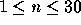
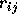

| Arbitrage (II) |
Arbitrage is the use of discrepancies in currency exchange rates to transform one unit of a currency into more than one unit of the same currency. For example, suppose that 1 US Dollar buys 0.5 British pound, 1 British pound buys 10.0 French francs, and 1 French franc buys 0.21 US dollar. Then, by converting currencies, a clever trader can start with 1 US dollar and buy 0.5 * 10.0 * 0.21 = 1.05 US dollars, making a profit of 5 percent. Your job is to write a program that takes a list of currency exchange rates as input and then determines whether arbitrage is possible or not.
The input file will contain one or more test cases. On the first line of each test case there is an integer n (  ), representing the number of different currencies. The next n lines each contain the name of one currency. Within a name no spaces will appear. The next line contains one integer m, representing the length of the table to follow. The last m lines each contain the name of a source currency, a real number  which represents the exchange rate from to and a name of the destination currency. Exchanges which do not appear in the table are impossible. Test cases are separated from each other by a blank line. Input is terminated by a value of zero (0) for n.
For each test case, print one line telling whether arbitrage is possible or not in the format "Case case: Yes" respectively "Case case: No".
3 USDollar BritishPound FrenchFranc 3 USDollar 0.5 BritishPound BritishPound 10.0 FrenchFranc FrenchFranc 0.21 USDollar 3 USDollar BritishPound FrenchFranc 6 USDollar 0.5 BritishPound USDollar 4.9 FrenchFranc BritishPound 10.0 FrenchFranc BritishPound 1.99 USDollar FrenchFranc 0.09 BritishPound FrenchFranc 0.19 USDollar 0
Case 1: Yes Case 2: No